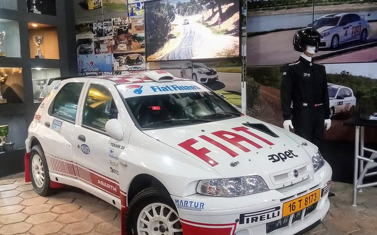

Home › Things to see, province by province › Bursa
The Kültür Varlıkları guide lists 21 places in Bursa: 10 museum, 5 religious building, 3 castle & historic building, 1 archaeological site, 1 waterfall, 1 ski resort. Below you will find the highlights, a map and the full list.
⭐ Highlights

1 · Bursa · MuseumBursa Archaeology Museum
Bursa Archaeological Museum, in the green grounds of Kültürpark, introduces the ancient past of Bithynia and Mysia.

2 · Bursa · MuseumBursa Atatürk House Museum
Bursa Atatürk House Museum is an elegant late 19th-century mansion where Atatürk stayed on visits to Bursa.

3 · Bursa · MuseumBursa City Museum
The Bursa City Museum has occupied the former courthouse in Heykel since 2004.
🗺 On the map
📍 All places (21)
Museum (10)
Bursa Archaeology MuseumMuseumBursa Atatürk House MuseumMuseumBursa City MuseumMuseum Bursa Türk İslam Eserleri MuseumMuseum
Bursa Türk İslam Eserleri MuseumMuseum Mudanya Mütareke House MuseumMuseum
Mudanya Mütareke House MuseumMuseum
Tofaş Anadolu Arabaları MuseumMuseum Yenişehir Şemaki House MuseumMuseum
Yenişehir Şemaki House MuseumMuseum İznik MuseumMuseumNilüfer Hatun İmareti Türk İslam Eserleri MuseumMuseumOsmanlı House MuseumMuseum
İznik MuseumMuseumNilüfer Hatun İmareti Türk İslam Eserleri MuseumMuseumOsmanlı House MuseumMuseumReligious building (5)
 Bursa Ulu MosqueReligious building
Bursa Ulu MosqueReligious building Green Mosque and Green Tomb, BursaReligious building
Green Mosque and Green Tomb, BursaReligious building Bursa İznik Göl BazilikasıReligious building
Bursa İznik Göl BazilikasıReligious building Emir Sultan MosqueReligious building
Emir Sultan MosqueReligious building Muradiye ComplexReligious building
Muradiye ComplexReligious buildingCastle & historic building (3)
 Cumalıkızık KöyüCastle & historic building
Cumalıkızık KöyüCastle & historic building Irgandı BridgeCastle & historic building
Irgandı BridgeCastle & historic building Koza CaravanseraiCastle & historic building
Koza CaravanseraiCastle & historic building